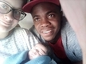

Mia 's
first steps in life
Mia 's
first steps in life

Naissance
Je m'appel Mia je suis née le 07/03/2016 à Rennes
en bretagne .
Avec 3kg et 45cm , j'etait une petite crevette !

{kind=link}
Comme vous pouvez le constaté sur la photo avec mes parents j'avais
tous juste quelques heures de vie sur la planète.
Née avant le terme, j'ai du rester hospitaliser pendant 15 jours !
fin mes parents me l'ont relaté car moi je m en souvient plus . Bref
... ils ont dû se faire du soucis pour moi !
hé ouii c'est là que tout a commencer mais je me suis bien rattrapé
vous inquiétez pas !
Je vous montrerai mon evolution tout au long de mon Blog donc
stay focus !
comme on dit de l autre coté de la Manche ...
Famille
Mon histoire est très particuliere. Je suis née en France d'un père
Camerounais et d'une mère Slovaque j'ai donc trois nationalité
Camerounaise,Slovaque et Française vous l'aurez deviner!
Laisser moi vous présenter à quoi ressemble tout ce meltingpot
culturel let go !!!
Mes parents se rencontrent à Rennes en aout 2014 tous deux
nouvelement arrivés dans cette ville de Bretagne.
Je vous les presente brievement:
Mon père s'appel Steve il est née au Cameroun dans
la ville de Yaoundé avant d'imigrer au Maroc et ensuite en France où
il arrive à Paris en 2013.
Après y avoir passer une année il decide de s'installer en
Bretagne.pour voir une photo de lui
cilquez ici!
Quand a ma mère , elle s'appel Lenka elle est née
en Slovaquie dans la ville de Hùmené elle a ensuite decidée de venir
s'installer en Bretagne et la suite vous la connaissez ! pour voir
une photo d elle cliquez ici!
{kind=link}
{kind=link}
Bien sur qu'il n y a pas que c est deux la ! rassurer vous ma famille est très cosmopolite et repartie dans plusieurs pays sur différents continents j aurais l occasion de vous les presenter dans mes prochaines revues
Ecole
J'ai commencer à aller a l'école en septembre 2018 et ce fut une journée très particuliere . mes parents m'ont reveillez très tôt. ils m'ont mis des vetements neufs et m'ont emmenés dans un endroit où ils y avait pleins d'enfants certains jouaient mais la pluparts pleuraient mais pas moi!... fin un ptit peu quand même lol! ... attendez j'etait pas prète moi ! mdr . Mais au final tous c estbien passé et je me suis fait des amis .
Aujourd'huis j'vais avec le sourire tous les matins car j ai hate de retrouver ma maitresse et mes amis appreciez par vous meme en cliquant ici !
{kind=link}
En ce qui concerne mes amis, j'en ai plusieurs mais ma meilleur amie s'appel maysoun! halala nous somme inseparable et parfois ont fait des betises et on se fait prendre par la maitresse je vous palerai d'elle prochainement et des autres aussi biensur !
voyages
J'adore les voyages ! surtout quand il s agit de prendre l'avion.
Mon premier voyage en avion je l'ai efectuer très tot j avais a
peine un an ! et je partai en Slovaquie dans le pays de ma mère pour
mon baptème.
Cela dit j'avais dejas fais plusieurs autres voyages avant celui là .